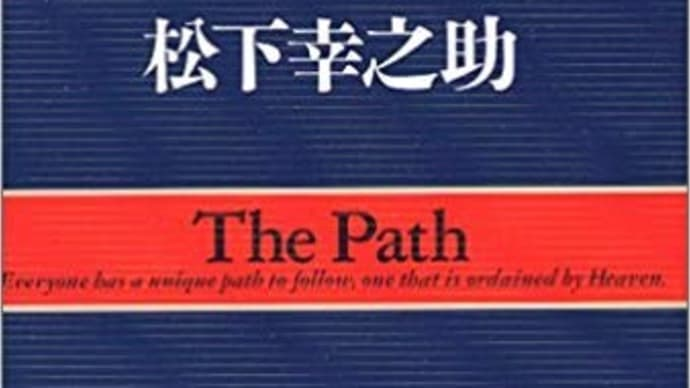

不朽の名作。
「道をひらく」とは一体？！

「道をひらく」とは、現パナソニックを一代で築き上げた「経営の神様」の異名を持つ、松下幸之助の代表作である。40年以上も昔に出版されたこの「道をひらく」だが、日々目まぐるしく変化するこの社会においても、ここに述べられている言葉は今も昔も変わらない「人としての心構え」である。
「7つの習慣」で有名なコヴィーさんも、表面上のスキルやテクニックではなく「人格」が大事だと述べているが、この「道をひらく」でもその真髄が語られている。
- 「道をひらく」の特徴
- 心に刺さった言葉たち
- まとめ
「道をひらく」の特徴
この「道をひらく」は、見開き一ページずつの短編集なので、一般的な本とは少し異なっていると言える。というのも、機関誌『PHP』に連載された121篇のエッセイをまとめた人生哲学といったもので、一般的なビジネス書のようにテーマを決めて構成されているわけではないからである。
本書でよく述べられているのは「素直」と「謙虚」という2つのキーワードである。
たとえ巨大グループの経営者という立場になっても、驕ることなく初心を忘れなかった松下幸之助という人物の人柄がよく表れている。
それとともに、素直であり謙虚な姿勢がとても重要だという人生のヒントを再認識させられた。
「逆境は尊い。しかしまた順境も尊い。要は逆境であれ、順境であれ、その与えられた境涯に素直に生きることである。謙虚の心を忘れぬことである。
素直さを失ったとき、逆境は卑屈を生み、順境は自惚（うぬぼれ）を生む。」
（「素直に生きる」より）
心に刺さった言葉たち
「人生は真剣勝負である。だからどんなに小さな事にでも、生命をかけて真剣にやらなければならない。…長い人生ときには失敗することもあるなどと呑気に構えていられない。…真剣になるかならないか、その度合いによってその人の人生は決まる。」
(「真剣勝負」より)
この「生命をかけて」という表現が心に刺さった。
たしかに、今まで真剣に取り組んできた経験はある。部活動にしてもアルバイトにしても就活にしても。しかし、
「それは生命をかけるほど真剣だったか？」と問われると、胸を張ってイエスとはいえない。
これほどまでの心掛けあってこそ真剣と呼べると考えさせられた。
「素直」、「謙虚」に次ぐキーワードとして、この「真剣」というものもよく述べられている。
「失敗することよりも、真剣でないことを恐れたほうがいい。」
(「転んでも」より)
「事の成否も大事だけれど、その成否を超えてなお大事なことは、力をつくすというみずからの心のうちにあるのである。」
(「力をつくして」より)
(「岐路にたちつつ」より)
「道をひらく」では「困難」というものに対しても考えさせられる。
「わるい時がすぎれば、よい時は必ず来る。」
「困難を困難とせず、思いを新たに、決意をかたく歩めば、困難がかえって飛躍の土台石となるのである。」
とも述べている。
ようは、その困難の捉え方次第で、むしろプラスにまで持っていけるということだ。
これに関しては、この間21卒の同期がfacebookで発信してくれていたこのnoteの内容に似ている。
ONE PIECE好きな高校生に伝えたい、気合と根性の話。 「自分の仕事は、自分がやっている自分の仕事だと思うのはとんでもないことで、ほんとうは世の中にやらせてもらっている世の中の仕事なのである。」
(「自分の仕事より)
この一言も抜群にかっこいい。
仕事の本質は他社への貢献。というアドラーの言葉に似たものがあると感じた。
「他者が自分に何をもたらしてくれるかではなく、自分が他者に何をできるかを考えること。」
この言葉をこれからも胸に刻んでいきたい。
まとめ
このように、40年以上昔の作品であるにも関わらず、今もなお私たちの心に刺さってくる言葉の数々がここにはある。つまり、どれだけ社会が移り変わっていこうと、人間の芯の部分は不変であるということだ。
モチベーションを上げやすい「個人主義」について書かれている最近のビジネス書ももちろん良いが、その前に不朽の名作である「道をひらく」に目を通してほしい。
常識だけど気付きにくいようなエッセンスが詰め込められている。